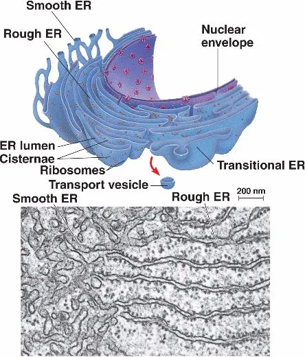

Mitochondria is a powerhouse of the cell. It is the powerhouse of the cell because it produces our energy with the process called cellular respiration and, in a way, PSU is like the Mitochondria but for the computer since PSU's job is to convert the AC coming from the wall into the DC that our computers can use.
The Nucleus is like the control centre of the cell telling everthing, what to do. The CPU controls everything and gives instructions to everthing too.
The ER handles the movement/transportations of nutrients and waste whitin the cell. Meanwhile wires and traces handle the movement/transportation of power and data within the computer.
Cytoplasm is the inside of the cell and well everything inside the computer corresponds to that
The Cell membrane controlls what goes in and out of the cell and the case kinda protects the computer in a way.
The Vacuole stores nutrients and an the SSD/HDD stores data so like the SSD/HDD is like a Vacuole for the Computer
Ribosomes produce proteins and Printers print documents.